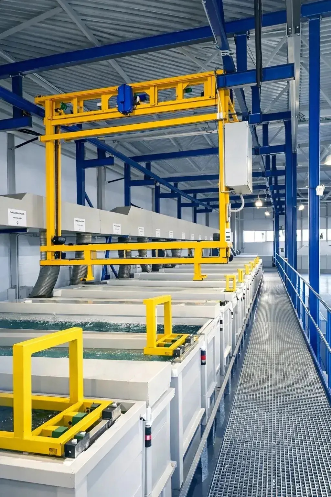
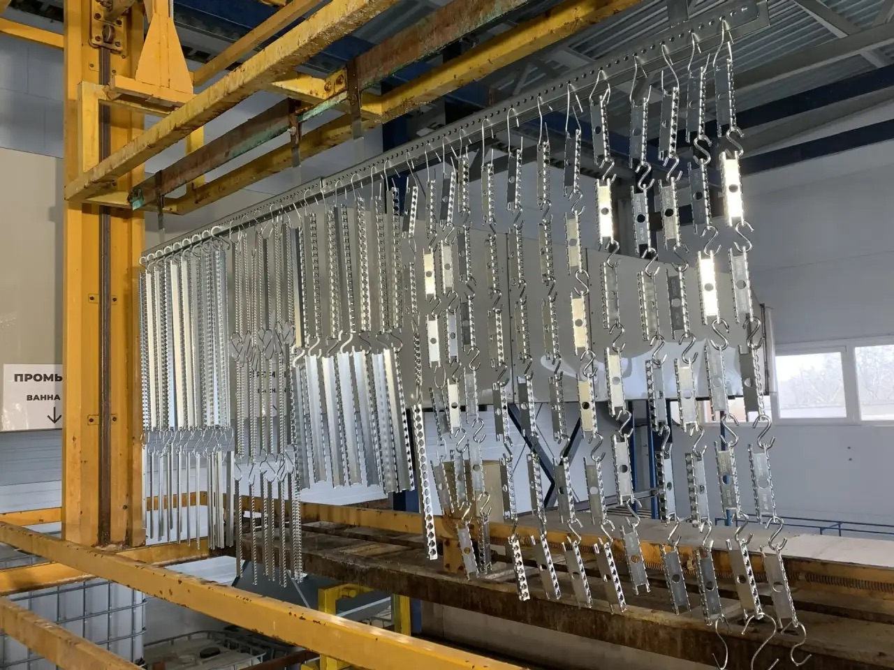
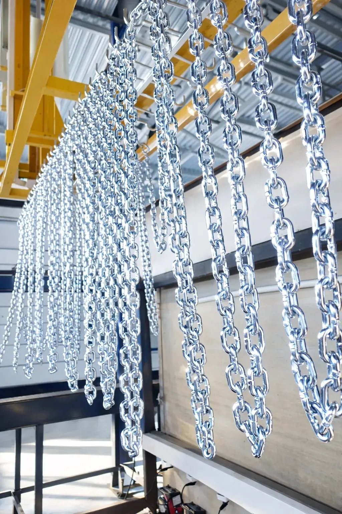

Современная гальваническая линия с автоматизированным управлением. Площадь цеха — 1000 м², производительность до 20 тонн готовой продукции в сутки.

Ванны для каждого этапа технологического процесса с автоматизированным управлением температурой и временем выдержки. Подвесная система с электроприводом обеспечивает точное позиционирование и равномерную обработку.
Линия рассчитана на работу с деталями длиной до 3 метров и весом подвески до 500 кг. Контроллеры PLC отслеживают параметры процесса в реальном времени.

Детали закрепляются на специальной оснастке с учётом геометрии и веса. Это обеспечивает равномерное обтекание электролитом и стабильную толщину покрытия по всей поверхности.
Для каждой типовой детали разработана своя оснастка — крепёж, метизы, профильные конструкции, нестандартные изделия. Перед погружением проводится визуальный контроль навески.

Цинкование крепежа проводится массово с использованием барабанной обработки или подвесным методом — в зависимости от размера и формы изделия. Контроль покрытия — 100% партии.
Готовые изделия имеют равномерное защитное покрытие, соответствующее ГОСТ 9.301-86. Каждая партия упаковывается и маркируется для дальнейшей логистики.
Многоэтапный процесс с соблюдением ГОСТ 9.301-86
Щелочная очистка от масел и загрязнений
Смыв остатков обезжиривающего раствора
Удаление окалины и оксидной плёнки
Подготовка поверхности к цинкованию
Нанесение защитного слоя цинка
Стабилизация покрытия и задание оттенка
Финальная обработка и фиксация
Толщинометрия, визуальная проверка
Технические характеристики линии и спектр обрабатываемых изделий
Длина до 3 м, ширина и высота — в пределах рабочей зоны ванн. Обработка как мелких метизов, так и крупных профильных конструкций.
До 500 кг на одну подвеску. Возможность обработки тяжёлых партий за один цикл — экономия времени и стоимости.
1000 м² производственного пространства: гальваническая линия, зона подготовки, склад готовой продукции, лаборатория.
До 20 тонн готовой продукции в сутки. Оперативное выполнение крупных заказов с предсказуемыми сроками.
Контроль состава растворов, измерение толщины и адгезии покрытия. Точность ±1 мкм. Каждая партия — под контролем.
Маркировка, защитная упаковка, отгрузка с пакетом сопроводительных документов. Доставка по согласованию.
Пришлите чертежи или фото — рассчитаем стоимость и сроки обработки